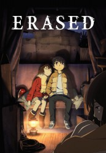

")
 
 IMDB-Wertung: 8.7 / 10
IMDB-Wertung: 8.7 / 10  Tomatometer: 81
Tomatometer: 81  Metascore:
Metascore: 
Satoru Fujinuma ist ein Mangaka, der nicht leicht an Geld kommt. Zudem hat er eine Gabe: Er kann in der Zeit zurückreisen, sobald ein Unglück geschieht und damit Todesfälle verhindern. Als seine Mutter auf grausame Weise umgebracht wurde, geht er zurück, um diesen bisher ungelösten Fall zu lösen. Doch er findet sich in seiner alten Grundschule wieder, genau vor der Entführung seines ehemaligen Mitschülers Kayo …
Jahr: 2016
Dauer: 22 Minuten
FSK:
Land: Japan Studio: Akita TelevisionTonspuren: DD2.0 - ,
Untertitel: Deutsch,
Auflösung: 720p (1280x720) Größe: 253 MB
Genre: Thriller, Drama, Sci-Fi, Fantasy, Animation/Trick, Mystery, TV-Serie
Regisseur: Tomohiko Ito, Makoto Hoshino, Toshimasa Ishii, Kosaya, Hirotaka Mori, Takahiro Shikama, Shinya Watada
Drehbuch: Alan Jay Lerner
Soundtrack:
Darsteller:
 Ben Diskin als Satoru Fujinuma
Ben Diskin als Satoru Fujinuma Sara Cravens als Sachiko Fujinuma
Sara Cravens als Sachiko Fujinuma Stephanie Sheh als Kayo Hinazuki
Stephanie Sheh als Kayo Hinazuki Ryan Bartley als Osamu
Ryan Bartley als Osamu Carrie Keranen als Akemi Hinazuki
Carrie Keranen als Akemi Hinazuki Mela Lee als Misato
Mela Lee als Misato Cherami Leigh als Airi Katagiri
Cherami Leigh als Airi Katagiri Max Mittelman als Jun 'Yuuki' Shiratori
Max Mittelman als Jun 'Yuuki' Shiratori D.C. Douglas als Dr. Kitamura
D.C. Douglas als Dr. Kitamura Cristina Valenzuela als Hamada
Cristina Valenzuela als Hamada Michelle Ruff als Satoru Fujinuma
Michelle Ruff als Satoru Fujinuma Christine Marie Cabanos als Hiromi Sugita
Christine Marie Cabanos als Hiromi Sugita Akemi Okamura als Akemi Hinazuki
Akemi Okamura als Akemi HinazukiDatei: X:\HD-Anime-Serien\Erased\Erased - Die Stadt in der es mich nicht gibt E01 Kaleidoskop.mkv seit 31.03.2017
Festplatte: Gemischt-01+Anime
 Es gibt insgesamt 67 Filme in der Gruppe 'HD-Anime-Serien'
Es gibt insgesamt 67 Filme in der Gruppe 'HD-Anime-Serien'